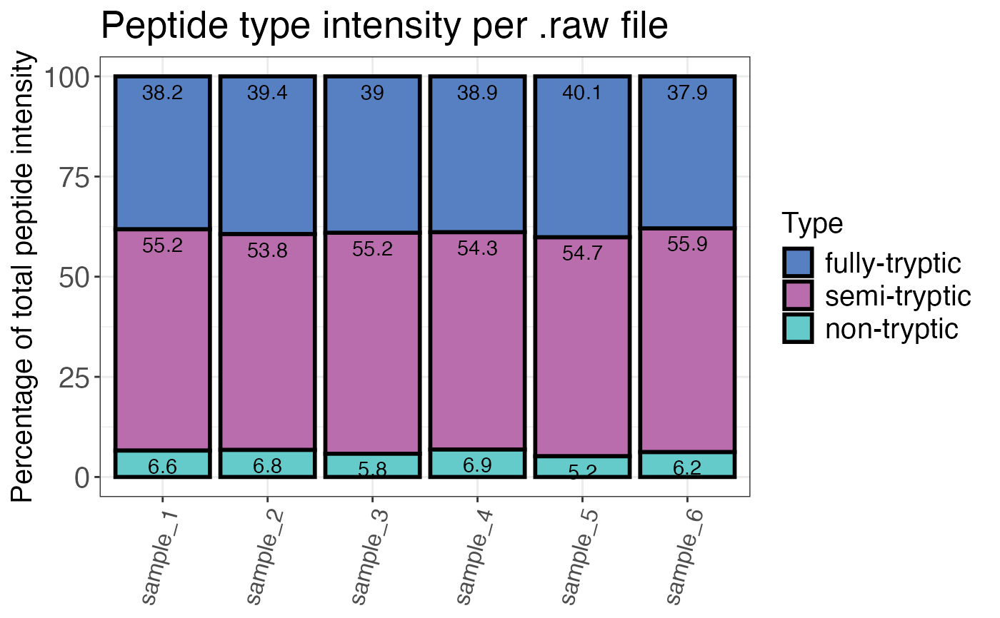

Calculates the percentage share of each peptide types (fully-tryptic, semi-tryptic, non-tryptic) for each sample.
qc_peptide_type( data, sample, peptide, pep_type, intensity, remove_na_intensities = TRUE, method = "count", plot = FALSE, interactive = FALSE )
| data | a data frame that contains at least the input columns. |
|---|---|
| sample | a character column in the |
| peptide | a character column in the |
| pep_type | a character column in the |
| intensity | a numeric column in the |
| remove_na_intensities | a logical value that specifies if sample/peptide combinations with intensities that are NA (not quantified IDs) should be dropped from the data frame for analysis of peptide type distributions. Default is TRUE since we are usually interested in the peptide type distribution of quantifiable IDs. This is only relevant for method = "count". |
| method | a character value that indicates the method used for evaluation.
|
| plot | a logical value that indicates whether the result should be plotted. |
| interactive | a logical value that indicates whether the plot should be interactive. |
A data frame that contains the calculated percentage shares of each peptide type per
sample. The count column contains the number of peptides with a specific type. The
peptide_type_percent column contains the percentage share of a specific peptide type.
# Load libraries library(dplyr) set.seed(123) # Makes example reproducible # Create example data data <- create_synthetic_data( n_proteins = 100, frac_change = 0.05, n_replicates = 3, n_conditions = 2, method = "effect_random" ) %>% mutate(intensity_non_log2 = 2^peptide_intensity_missing) # Determine peptide type percentages qc_peptide_type( data = data, sample = sample, peptide = peptide, pep_type = pep_type, intensity = intensity_non_log2, method = "intensity", plot = FALSE )#> # A tibble: 18 × 3 #> sample pep_type peptide_type_percent #> <chr> <fct> <dbl> #> 1 sample_3 semi-tryptic 55.2 #> 2 sample_4 semi-tryptic 54.3 #> 3 sample_5 semi-tryptic 54.7 #> 4 sample_6 semi-tryptic 55.9 #> 5 sample_2 non-tryptic 6.78 #> 6 sample_3 non-tryptic 5.80 #> 7 sample_4 non-tryptic 6.85 #> 8 sample_5 non-tryptic 5.17 #> 9 sample_6 non-tryptic 6.21 #> 10 sample_1 fully-tryptic 38.2 #> 11 sample_2 fully-tryptic 39.4 #> 12 sample_3 fully-tryptic 39.0 #> 13 sample_4 fully-tryptic 38.9 #> 14 sample_5 fully-tryptic 40.1 #> 15 sample_6 fully-tryptic 37.9 #> 16 sample_1 semi-tryptic 55.2 #> 17 sample_2 semi-tryptic 53.8 #> 18 sample_1 non-tryptic 6.59# Plot peptide type qc_peptide_type( data = data, sample = sample, peptide = peptide, pep_type = pep_type, intensity = intensity_non_log2, method = "intensity", plot = TRUE )